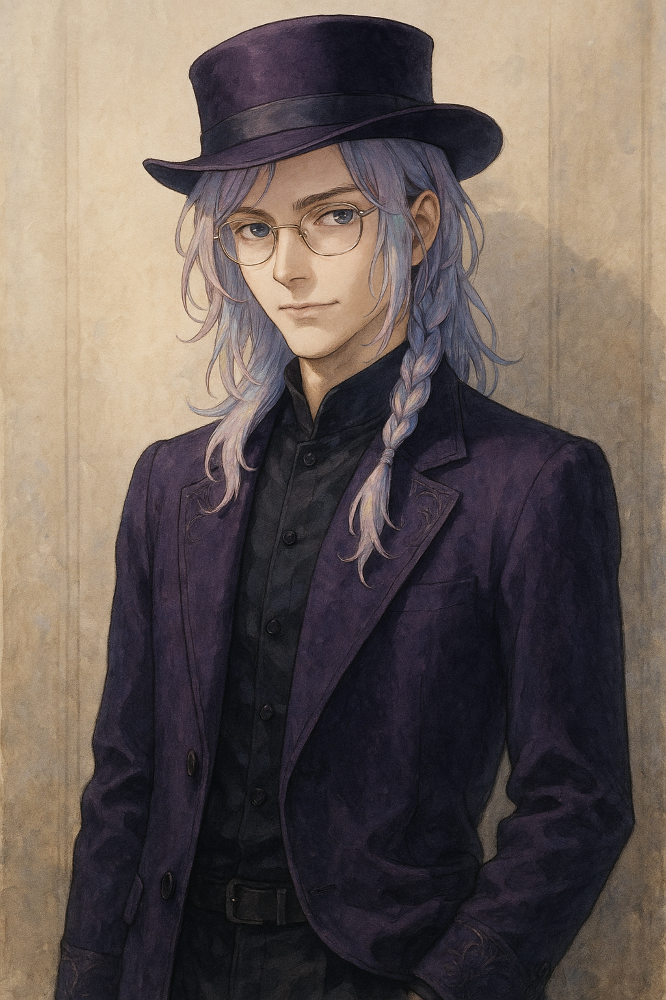
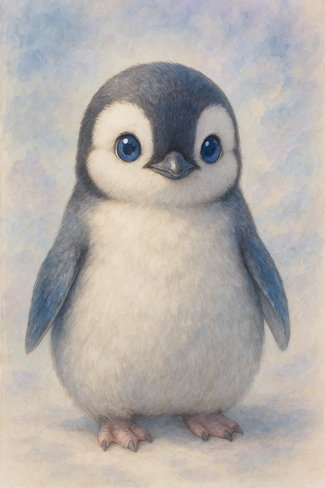

角色資料庫

謝恩 Xie En
銀灰色短髮、略顯清秀的調查者，居住於星耀城。故事開始於星耀帝國。
星耀帝國主角調查者

阿斯蒂爾 Astil
神祕的死靈師，潛藏於謝恩心靈深處，時常以聲音指引。
死靈師陰影領域精神連結

企鵝 Penguin
外表看似普通企鵝，實際擁有高智商與人類語言能力，是謝恩的好友。
企鵝夥伴幽默
銀灰色短髮、略顯清秀的調查者，居住於星耀城。故事開始於星耀帝國。
神祕的死靈師，潛藏於謝恩心靈深處，時常以聲音指引。
外表看似普通企鵝，實際擁有高智商與人類語言能力，是謝恩的好友。